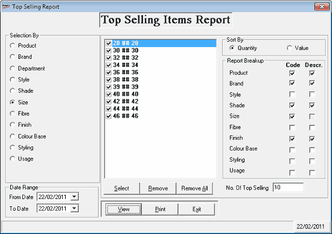

The Top Selling Items Report provides a list of items that are highest in terms of sales value or sales quantity, as chosen by you, for a given date range. This report can be grouped on all or selected, item classifications and five basic analysis codes. The number of items to be printed in the report can be specified, i.e., top ten, top twenty or selected number of items. This report is based on item-level information such as sales quantity and sales value.
How to reach: Reports > Sales > Top Selling Items
The Top Selling Report window is displayed.

Selection By: Select the attribute (Class1 and Class2, SuperClass1 and SuperClass2, SubClass1 and SubClass2, Size and Item analysis codes 1 to 5) of the items based on which report is to be generated. Only one option can be selected. Once you select an attribute the corresponding values list is displayed on the right.
Select: Click to select all values displayed in the list
Remove: Click to deselect the current value selected
Remove All: Click to deselect all values in the list
Sort By: Select Quantity or Value based on which the lines in the report need to be sorted.
Report Breakup: Report can be grouped on Product, Brand, Style, Shade, Size or five basic analysis codes (Fibre, Finish, Colour Base, Styling and Usage). You may select one or more of these attributes. You can choose to display Code, Description or both of the selected attributes.
No. Of Top selling: Enter the value as to how many top selling items have to be displayed in the report.
Date Range: By default, the From Date and To Date will be the current Shoper date. You can enter any date range but the To Date cannot be greater than the Shoper date.